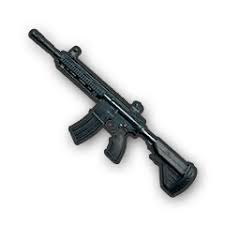
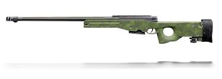

| Weapon Type | Weapon | Description |
|---|---|---|
| Assault Rifles | M416  |
Takes 5.56mm ammo, highly stable with full attachments. Ideal for mid-range combat but attachment-dependent. |
| AKM | Fires 7.62mm bullets, high single-shot damage. Hard to control due to large recoil, suitable for close- and long-range point-shooting. | |
| Sniper Rifles | AWM  |
Uses magnum bullets, extremely powerful, can penetrate level-3 helmets. Long-range, requires high-power scope and good aim. |
| Kar98K | 7.62mm ammo, high single-shot damage, can destroy level-2 helmets. Depends on scope, has bullet drop, long reload time. | |
| Submachine Guns | UZI | Super-fast firing rate, great for close-range. Low damage, needs extended mags. |
| UMP45 | Stable, excellent hip-fire. Good in mid- to close-range combat. | |
| Shotguns | S686 | Double-barreled, high-damage at close range. Low ammo capacity, low margin for error. |
| S12K | Semi-automatic, provides continuous close-range firepower. | |
| Machine Guns | M249 | Airdrop weapon, high rate of fire, large ammo capacity. Low mobility, long reload. |
| DP-28 | Stable when prone, slow reload, easy to expose when reloading. | |
| Pistols | P1911 | .45-caliber, moderate damage and rate of fire. |
| P92 | 9mm, large magazine, fast-firing, good overall among pistols. |